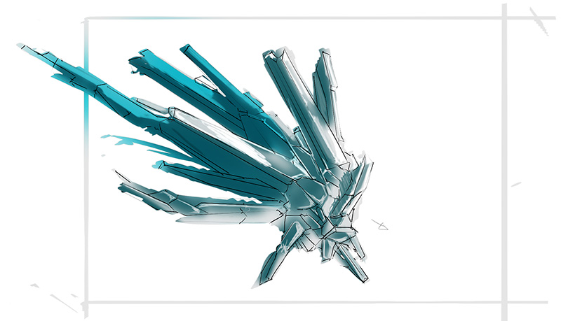

One of the many supporting variants of the X’Tal. Floating or scuttling, underground or trawling along the floors of the nearest seas, these troops are best used for their great adaptability and scouting potential. As the eyes and ears of the Collective, Phites allow for other X’Tal to know their surroundings before they’ve yet to even arrive.
